Changes in PRIMAP-hist v2.6.1_final compared to v2.6_final for Jordan
2025-03-19
Johannes Gütschow
Change analysis for Jordan for PRIMAP-hist v2.6.1_final compared to v2.6_final
Overview over emissions by sector and gas
The following figures show the aggregate national total emissions excluding LULUCF AR6GWP100 for the country reported priority scenario. The dotted linesshow the v2.6_final data.
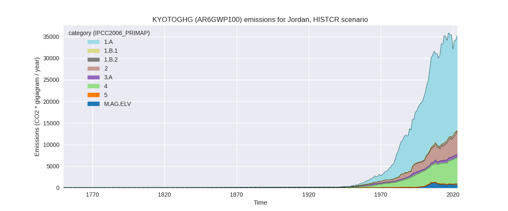

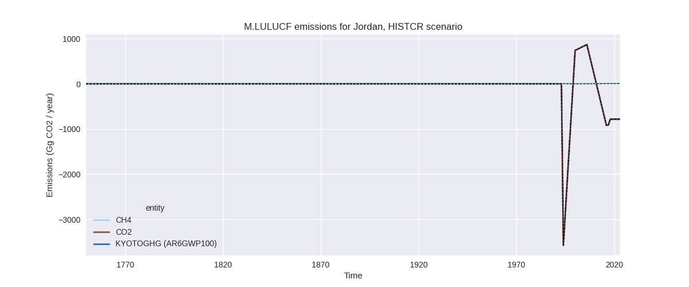
The following figures show the aggregate national total emissions excluding LULUCF AR6GWP100 for the third party priority scenario. The dotted linesshow the v2.6_final data.
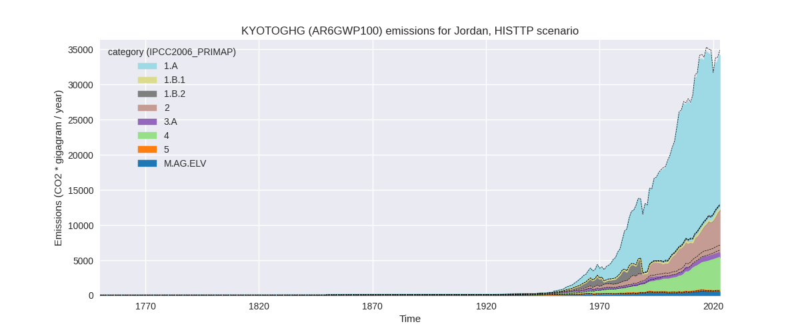
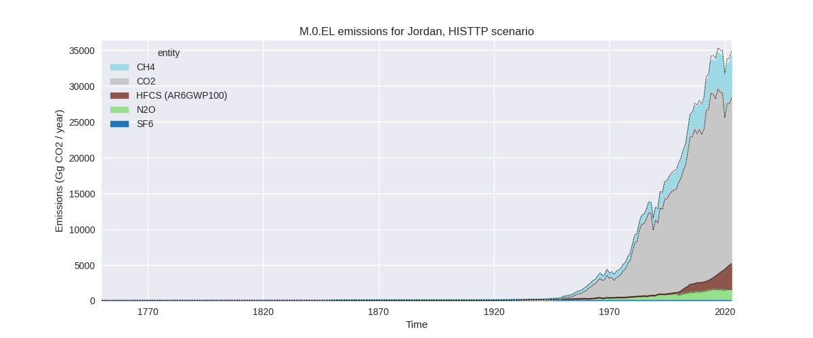
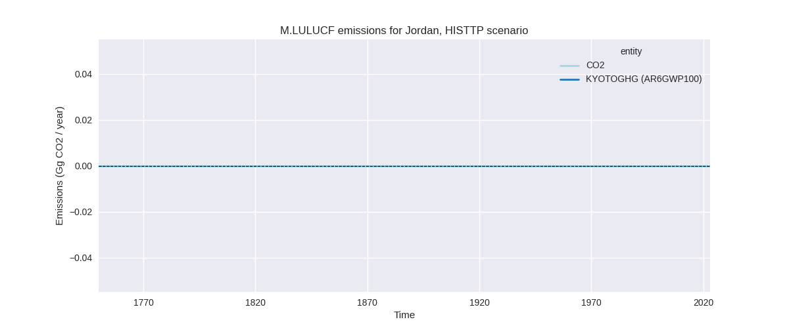
Overview over changes
In the country reported priority scenario we have the following changes for aggregate Kyoto GHG and national total emissions excluding LULUCF (M.0.EL):
- Emissions in 2023 have changed by 0.1%% (18.59 Gg CO2 / year)
- Emissions in 1990-2023 have changed by -0.0%% (-0.09 Gg CO2 / year)
In the third party priority scenario we have the following changes for aggregate Kyoto GHG and national total emissions excluding LULUCF (M.0.EL):
- Emissions in 2023 have changed by -2.0%% (-687.29 Gg CO2 / year)
- Emissions in 1990-2023 have changed by -1.8%% (-451.19 Gg CO2 / year)
Most important changes per scenario and time frame
In the country reported priority scenario the following sector-gas combinations have the highest absolute impact on national total KyotoGHG (AR6GWP100) emissions in 2023 (top 5):
- 1: 2, CO2 with 126.54 Gg CO2 / year (7.2%)
- 2: M.AG.ELV, N2O with -86.97 Gg CO2 / year (-10.8%)
- 3: 4, CH4 with 70.15 Gg CO2 / year (1.2%)
- 4: 1.B.2, CH4 with -44.87 Gg CO2 / year (-7.0%)
- 5: 3.A, CH4 with -31.35 Gg CO2 / year (-4.5%)
In the country reported priority scenario the following sector-gas combinations have the highest absolute impact on national total KyotoGHG (AR6GWP100) emissions in 1990-2023 (top 5):
- 1: 4, CH4 with 23.59 Gg CO2 / year (0.6%)
- 2: 5, N2O with -14.17 Gg CO2 / year (-13.3%)
- 3: M.AG.ELV, N2O with -7.27 Gg CO2 / year (-1.3%)
- 4: 3.A, CH4 with -1.73 Gg CO2 / year (-0.3%)
- 5: 2, HFCS (AR6GWP100) with -1.31 Gg CO2 / year (-0.2%)
In the third party priority scenario the following sector-gas combinations have the highest absolute impact on national total KyotoGHG (AR6GWP100) emissions in 2023 (top 5):
- 1: 4, CH4 with -1003.24 Gg CO2 / year (-17.9%)
- 2: 2, CO2 with 419.73 Gg CO2 / year (30.9%)
- 3: M.AG.ELV, N2O with -65.81 Gg CO2 / year (-10.8%)
- 4: 1.B.2, CO2 with 42.02 Gg CO2 / year (672799.9%)
- 5: 1.B.2, CH4 with -36.22 Gg CO2 / year (-34.7%)
In the third party priority scenario the following sector-gas combinations have the highest absolute impact on national total KyotoGHG (AR6GWP100) emissions in 1990-2023 (top 5):
- 1: 4, CH4 with -626.41 Gg CO2 / year (-19.2%)
- 2: 2, CO2 with 244.23 Gg CO2 / year (17.6%)
- 3: 1.B.2, CH4 with -47.64 Gg CO2 / year (-44.1%)
- 4: 5, N2O with -14.17 Gg CO2 / year (-13.3%)
- 5: M.AG.ELV, N2O with -5.50 Gg CO2 / year (-1.2%)
Notes on data changes
Here we list notes explaining important emissions changes for the country.
- No new country reported data has been included. Changes in the CR time-series are small and come from updated third party data (EDGAR, FAO) which is used to extrapolate the country reported data.
- Changes in the TP time-series come from updated EDGAR and to a small extent FAO data. FAO has adjusted data for the latest years while EDGAR has updated full time-series with the main change coming from the waste sector.
Changes by sector and gas
For each scenario and time frame the changes are displayed for all individual sectors and all individual gases. In the sector plot we use aggregate Kyoto GHGs in AR6GWP100. In the gas plot we usenational total emissions without LULUCF.
country reported scenario
2023
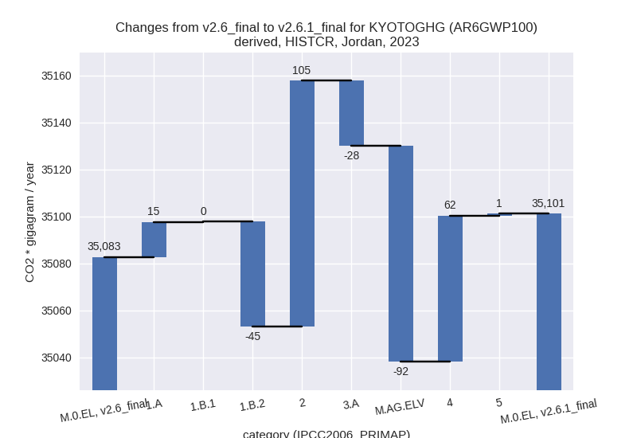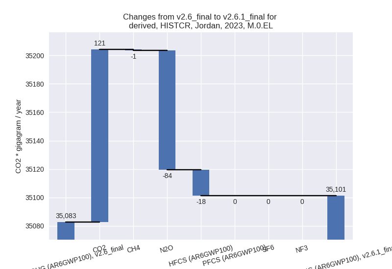
1990-2023
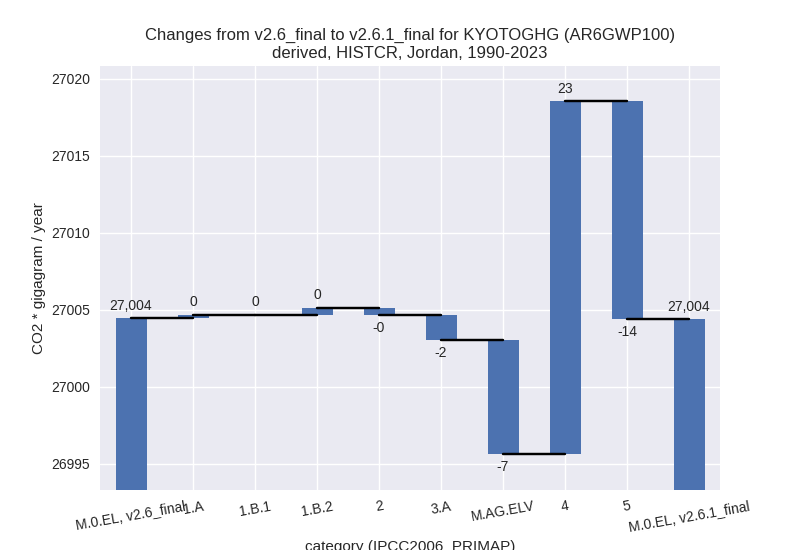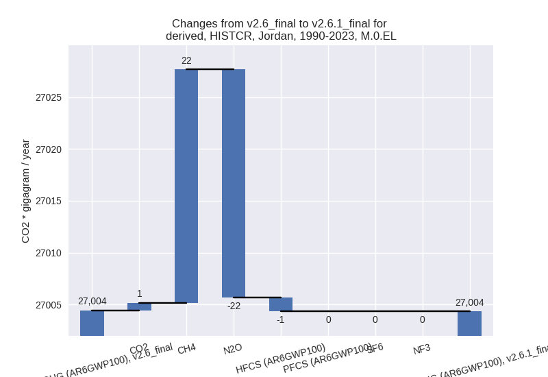
third party scenario
2023
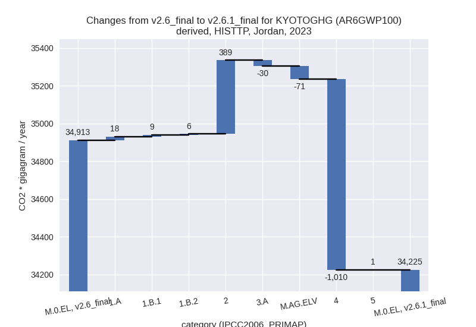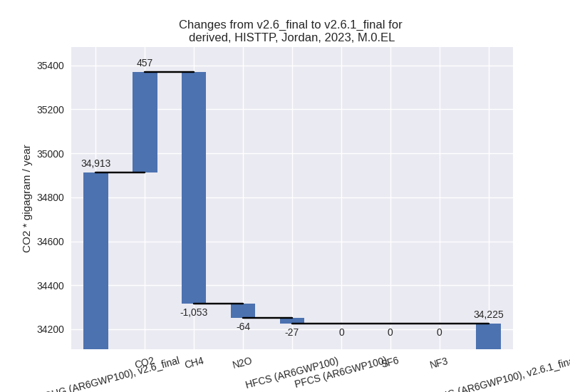
1990-2023
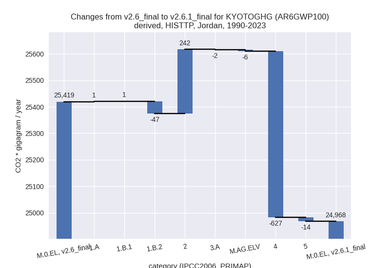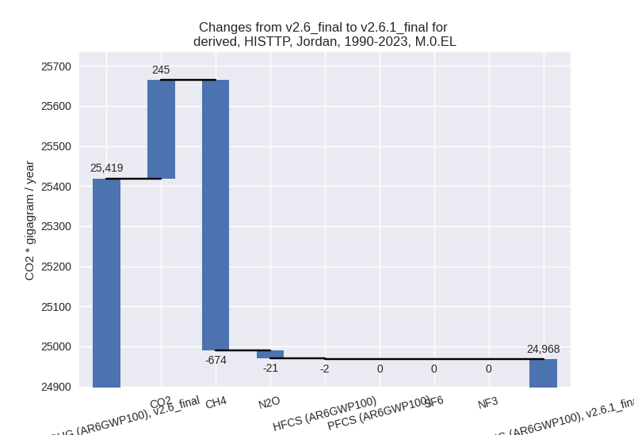
Detailed changes for the scenarios:
country reported scenario (HISTCR):
Most important changes per time frame
For 2023 the following sector-gas combinations have the highest absolute impact on national total KyotoGHG (AR6GWP100) emissions in 2023 (top 5):
- 1: 2, CO2 with 126.54 Gg CO2 / year (7.2%)
- 2: M.AG.ELV, N2O with -86.97 Gg CO2 / year (-10.8%)
- 3: 4, CH4 with 70.15 Gg CO2 / year (1.2%)
- 4: 1.B.2, CH4 with -44.87 Gg CO2 / year (-7.0%)
- 5: 3.A, CH4 with -31.35 Gg CO2 / year (-4.5%)
For 1990-2023 the following sector-gas combinations have the highest absolute impact on national total KyotoGHG (AR6GWP100) emissions in 1990-2023 (top 5):
- 1: 4, CH4 with 23.59 Gg CO2 / year (0.6%)
- 2: 5, N2O with -14.17 Gg CO2 / year (-13.3%)
- 3: M.AG.ELV, N2O with -7.27 Gg CO2 / year (-1.3%)
- 4: 3.A, CH4 with -1.73 Gg CO2 / year (-0.3%)
- 5: 2, HFCS (AR6GWP100) with -1.31 Gg CO2 / year (-0.2%)
Changes in the main sectors for aggregate KyotoGHG (AR6GWP100) are
- 1: Total sectoral emissions in 2022 are 21797.52 Gg CO2 / year which is 63.7% of M.0.EL emissions. 2023 Emissions have changed by -0.1% (-29.59 Gg CO2 / year). 1990-2023 Emissions have changed by 0.0% (0.66 Gg CO2 / year).
- 2: Total sectoral emissions in 2022 are 4898.69 Gg
CO2 / year which is 14.3% of M.0.EL emissions. 2023 Emissions have
changed by 2.1% (104.69 Gg CO2 /
year). 1990-2023 Emissions have changed by -0.0% (-0.49 Gg CO2 / year). For 2023 the
changes per gas
are:

- M.AG: Total sectoral emissions in 2022 are 1431.61
Gg CO2 / year which is 4.2% of M.0.EL emissions. 2023 Emissions have
changed by -7.7% (-119.59 Gg CO2 /
year). 1990-2023 Emissions have changed by -0.8% (-9.01 Gg CO2 / year). For 2023 the
changes per gas
are:
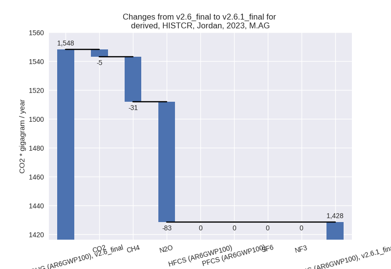
The changes come from the following subsectors:- 3.A: Total sectoral emissions in 2022 are 691.52 Gg
CO2 / year which is 48.3% of category M.AG emissions. 2023 Emissions
have changed by -3.9% (-27.79 Gg CO2
/ year). 1990-2023 Emissions have changed by -0.3% (-1.57 Gg CO2 / year). For 2023 the
changes per gas
are:
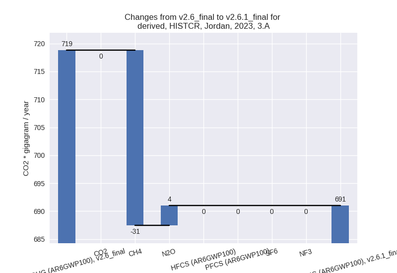
There is no subsector information available in PRIMAP-hist. - M.AG.ELV: Total sectoral emissions in 2022 are
740.09 Gg CO2 / year which is 51.7% of category M.AG emissions. 2023
Emissions have changed by -11.1%
(-91.80 Gg CO2 / year). 1990-2023 Emissions have changed by -1.3% (-7.44 Gg CO2 / year). For 2023 the
changes per gas
are:
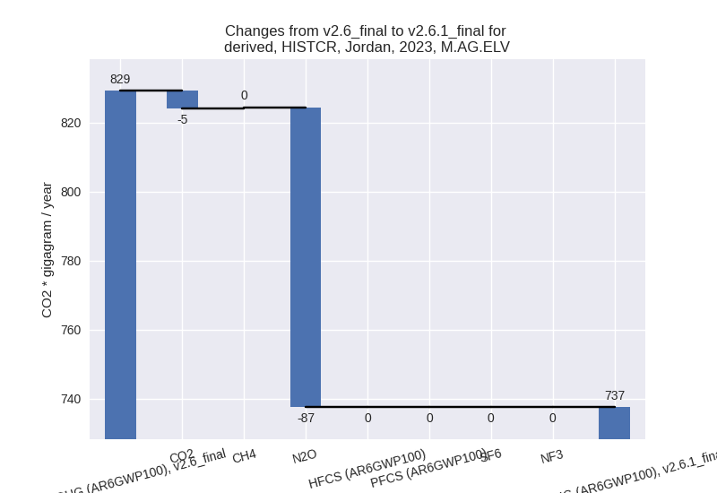
There is no subsector information available in PRIMAP-hist.
- 3.A: Total sectoral emissions in 2022 are 691.52 Gg
CO2 / year which is 48.3% of category M.AG emissions. 2023 Emissions
have changed by -3.9% (-27.79 Gg CO2
/ year). 1990-2023 Emissions have changed by -0.3% (-1.57 Gg CO2 / year). For 2023 the
changes per gas
are:
- 4: Total sectoral emissions in 2022 are 5971.61 Gg CO2 / year which is 17.5% of M.0.EL emissions. 2023 Emissions have changed by 1.0% (62.24 Gg CO2 / year). 1990-2023 Emissions have changed by 0.6% (22.92 Gg CO2 / year).
- 5: Total sectoral emissions in 2022 are 93.99 Gg
CO2 / year which is 0.3% of M.0.EL emissions. 2023 Emissions have
changed by 0.8% (0.85 Gg CO2 /
year). 1990-2023 Emissions have changed by -13.3% (-14.17 Gg CO2 / year). For
1990-2023 the changes per gas
are:
third party scenario (HISTTP):
Most important changes per time frame
For 2023 the following sector-gas combinations have the highest absolute impact on national total KyotoGHG (AR6GWP100) emissions in 2023 (top 5):
- 1: 4, CH4 with -1003.24 Gg CO2 / year (-17.9%)
- 2: 2, CO2 with 419.73 Gg CO2 / year (30.9%)
- 3: M.AG.ELV, N2O with -65.81 Gg CO2 / year (-10.8%)
- 4: 1.B.2, CO2 with 42.02 Gg CO2 / year (672799.9%)
- 5: 1.B.2, CH4 with -36.22 Gg CO2 / year (-34.7%)
For 1990-2023 the following sector-gas combinations have the highest absolute impact on national total KyotoGHG (AR6GWP100) emissions in 1990-2023 (top 5):
- 1: 4, CH4 with -626.41 Gg CO2 / year (-19.2%)
- 2: 2, CO2 with 244.23 Gg CO2 / year (17.6%)
- 3: 1.B.2, CH4 with -47.64 Gg CO2 / year (-44.1%)
- 4: 5, N2O with -14.17 Gg CO2 / year (-13.3%)
- 5: M.AG.ELV, N2O with -5.50 Gg CO2 / year (-1.2%)
Changes in the main sectors for aggregate KyotoGHG (AR6GWP100) are
- 1: Total sectoral emissions in 2022 are 21437.15 Gg CO2 / year which is 64.6% of M.0.EL emissions. 2023 Emissions have changed by 0.2% (33.15 Gg CO2 / year). 1990-2023 Emissions have changed by -0.3% (-44.92 Gg CO2 / year).
- 2: Total sectoral emissions in 2022 are 5795.52 Gg
CO2 / year which is 17.5% of M.0.EL emissions. 2023 Emissions have
changed by 6.9% (389.39 Gg CO2 /
year). 1990-2023 Emissions have changed by 8.0% (242.21 Gg CO2 / year). For 2023 the
changes per gas
are:
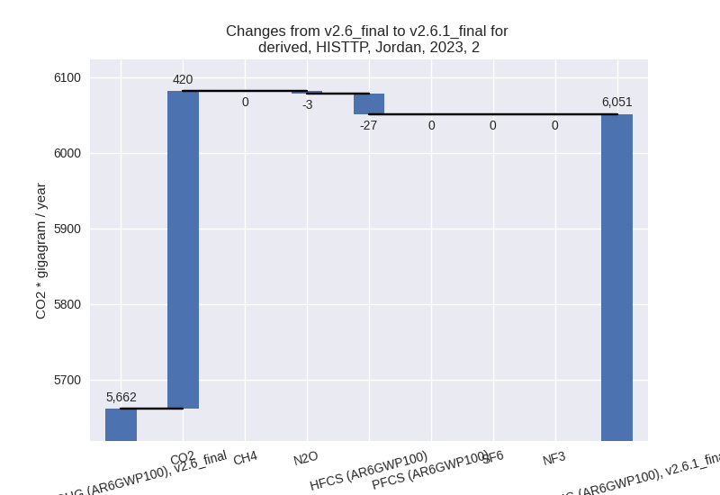
For 1990-2023 the changes per gas are:
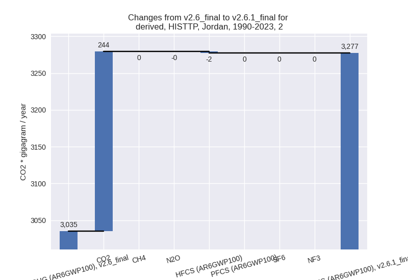 - M.AG: Total sectoral emissions in 2022 are 1239.78
Gg CO2 / year which is 3.7% of M.0.EL emissions. 2023 Emissions have
changed by -7.5% (-100.71 Gg CO2 /
year). 1990-2023 Emissions have changed by -0.7% (-7.34 Gg CO2 / year). For 2023 the
changes per gas
are:
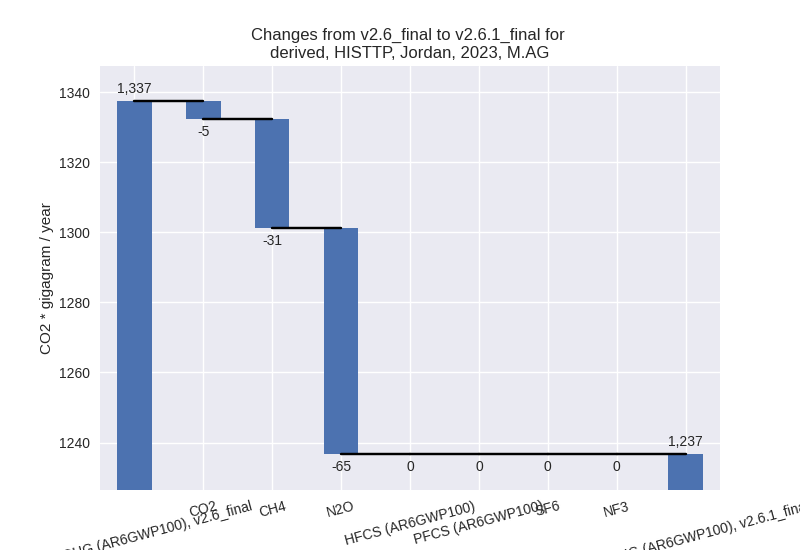
The changes come from the following subsectors:- 3.A: Total sectoral emissions in 2022 are 675.90 Gg
CO2 / year which is 54.5% of category M.AG emissions. 2023 Emissions
have changed by -4.3% (-30.07 Gg CO2
/ year). 1990-2023 Emissions have changed by -0.3% (-1.67 Gg CO2 / year). For 2023 the
changes per gas
are:
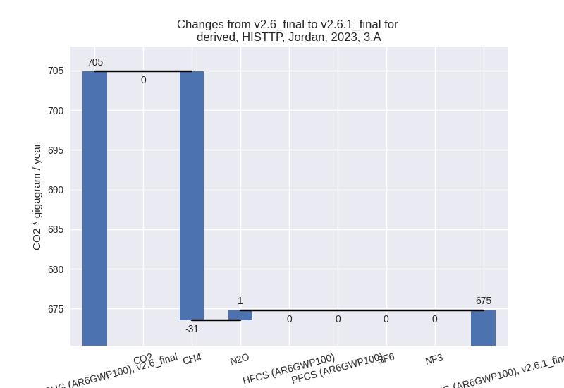
There is no subsector information available in PRIMAP-hist. - M.AG.ELV: Total sectoral emissions in 2022 are
563.88 Gg CO2 / year which is 45.5% of category M.AG emissions. 2023
Emissions have changed by -11.2%
(-70.64 Gg CO2 / year). 1990-2023 Emissions have changed by -1.2% (-5.67 Gg CO2 / year). For 2023 the
changes per gas
are:
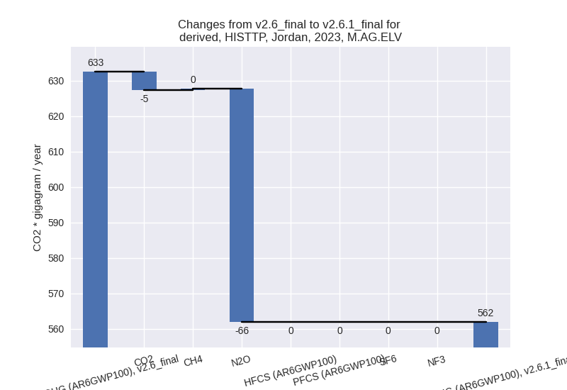
There is no subsector information available in PRIMAP-hist.
- 3.A: Total sectoral emissions in 2022 are 675.90 Gg
CO2 / year which is 54.5% of category M.AG emissions. 2023 Emissions
have changed by -4.3% (-30.07 Gg CO2
/ year). 1990-2023 Emissions have changed by -0.3% (-1.67 Gg CO2 / year). For 2023 the
changes per gas
are:
- 4: Total sectoral emissions in 2022 are 4610.13 Gg
CO2 / year which is 13.9% of M.0.EL emissions. 2023 Emissions have
changed by -17.6% (-1009.96 Gg CO2 /
year). 1990-2023 Emissions have changed by -18.7% (-626.98 Gg CO2 / year). For 2023
the changes per gas
are:
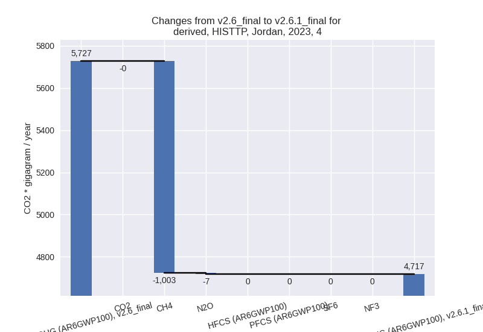
For 1990-2023 the changes per gas are: - 5: Total sectoral emissions in 2022 are 93.99 Gg
CO2 / year which is 0.3% of M.0.EL emissions. 2023 Emissions have
changed by 0.8% (0.85 Gg CO2 /
year). 1990-2023 Emissions have changed by -13.3% (-14.17 Gg CO2 / year). For
1990-2023 the changes per gas
are:
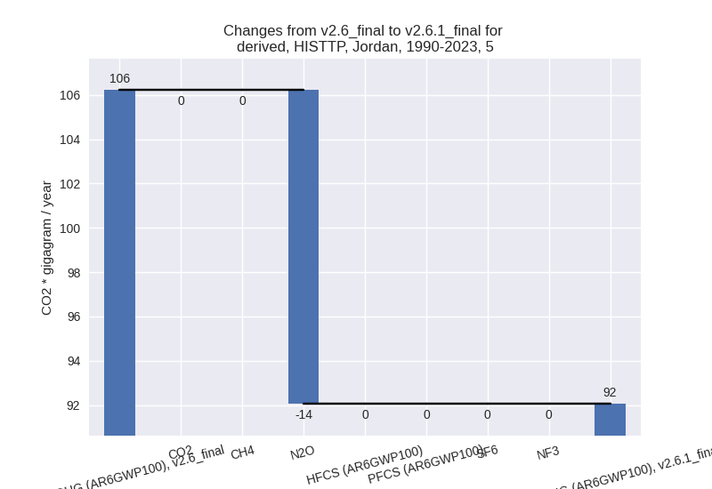